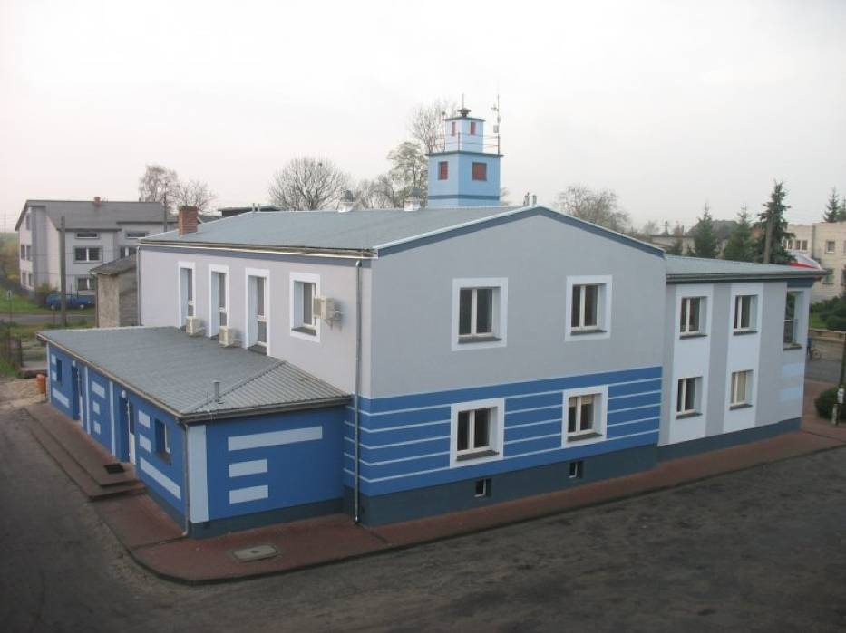

SKOMLIN
SKOMLINOśrodki kultury Skomlin i okolice
Stowarzyszenie Miłośników Ziemi Skomlińskiej
Krótko o Stowarzyszeniu, powstało ono w 1992 roku i na dzień dzisiejszy liczy 87 członków. Organizacja ma na celu wspomóc finansowo stypendia młodych zdolnych uczniów w tutejszej podstawówce, odpowiada też za organizację corocznego festynu.
Więcej o towarzystwie:
Ochotnicza Straż Pożarna w Skomlinie
Początki straży ogniowej w Skomlinie (osady w powiecie wieluńskim powstałej w 1210 r.) sięgają 1905 r.
Gdy po wielu trudach nareszcie powstało Towarzystwo Straży Ogniowej z siedziba w Skomlinie. Grupa założycieli wybrała pierwszy zarząd. W jego skład weszli:
- Emil Kluge - naczelnik
- Edward Śliwiński - sekretarz
- ....... Leplawy - skarbnik
- Mateusz Reszka - członek
- Piotr Zaremba - członek
- Józef Patykowski - członek
- Emil Kluge - naczelnik
- Edward Śliwiński - sekretarz
- ....... Leplawy - skarbnik
- Mateusz Reszka - członek
- Piotr Zaremba - członek
- Józef Patykowski - członek

Organizacje pozarządowe w Skomlinie i okolicach
W Skomlinie:
-Liga Obrony Kraju (Prezes Zarządu: Zbigniew Zaremba)
-Koło Polskiego Stowarzyszenia Diabetyków w Skomlinie (Prezes Zarządu koła: Jadwiga Kowalek).
-Koło Polskiego Stowarzyszenia Diabetyków w Skomlinie (Prezes Zarządu koła: Jadwiga Kowalek).
We Wróblewie:
-Towarzystwo Przyjaciół Wróblewa (Prezes Zarządu: Leszek Gierczyk)
-Koło Gospodyń Wiejskich we Wróblewie (Prezes Zarządu: Agnieszka Krzak)
-Koło Gospodyń Wiejskich we Wróblewie (Prezes Zarządu: Agnieszka Krzak)